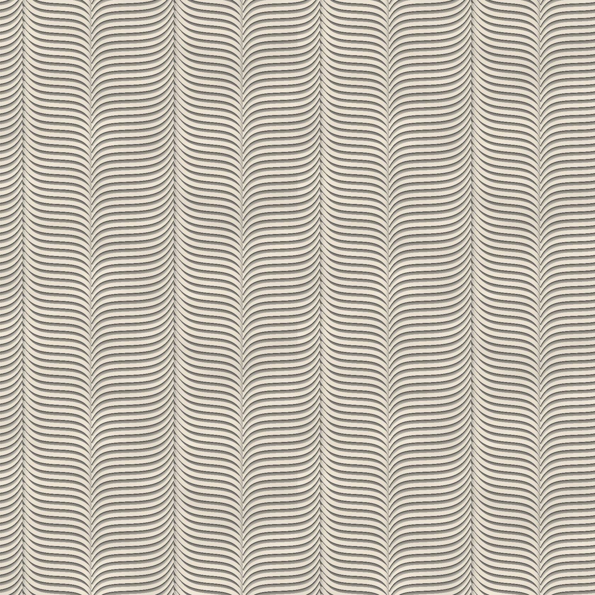
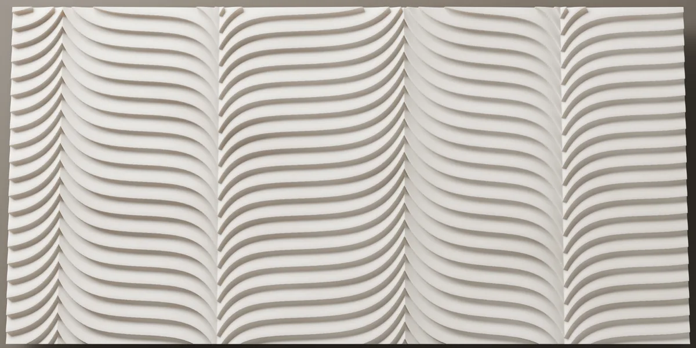
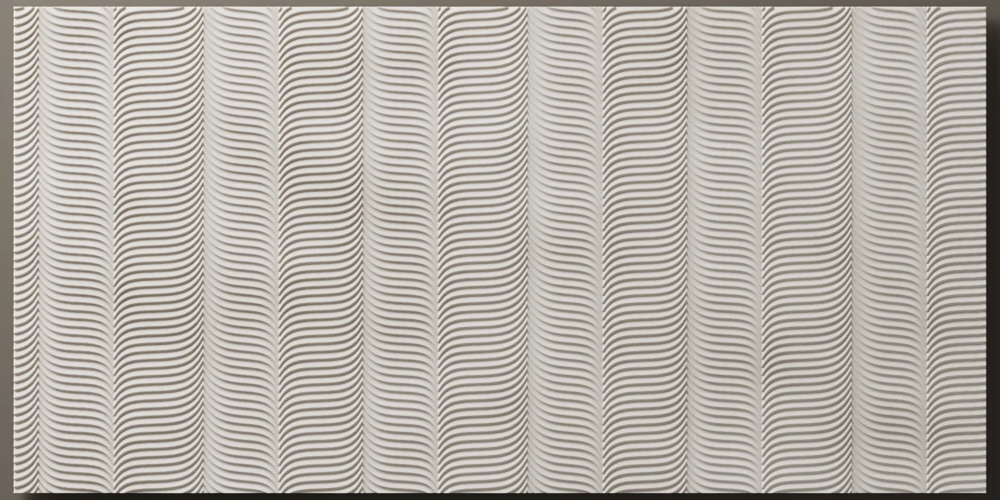
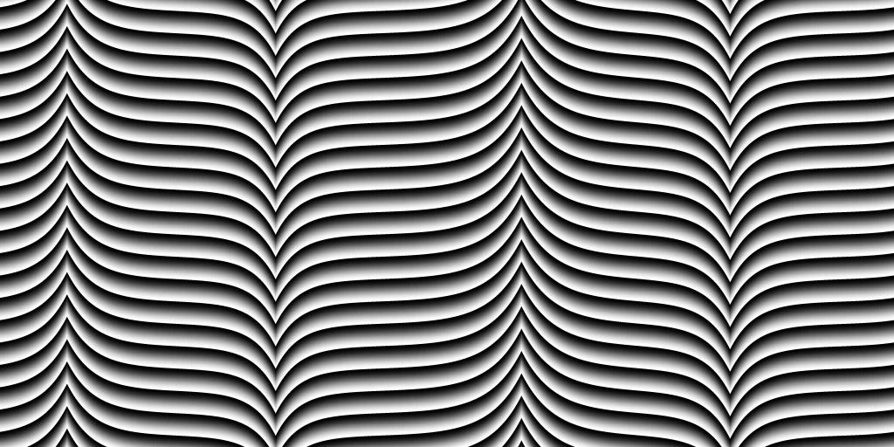

Atölye Tasarımları
Andante
Yatay nervürlerden bir alan çizdik ve onu, ebruda tarak çekilir gibi, dört dikey çizgi boyunca yukarı ya da aşağı çektik. Nervürler bu çizgilerde sivri bir kıvrımla döner; çizgiler duvar boyunca düzensiz bir adımla ilerler.



- Ölçü
- 1200 × 600 mm
- Rölyef
- 7 mm
- Kurgu
- Kesintisiz alan
- Malzeme
- Lumina PMAG™ (polimer modifiye kompozit alçı)
- Yüzey
- Boyaya hazır ya da artizan finish ile
- Montaj
- Polimer yapıştırıcıyla
- Teslim
- Sözleşme ve peşinattan sonra 4 hafta (50 m²’ye kadar), Sapanca’da fabrika teslimi (EXW)
- Minimum sipariş
- 7,5 m²

Çizim
